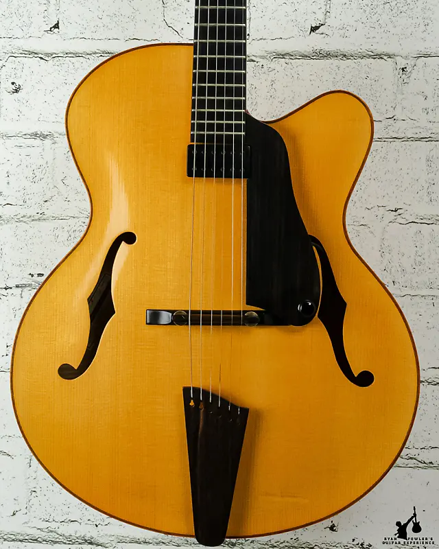
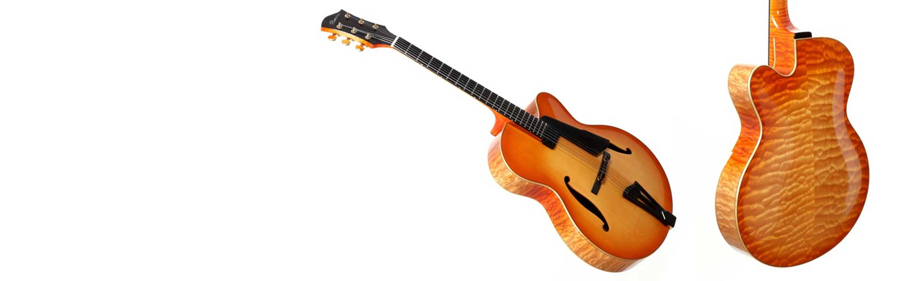

Browse our collection to find the perfect guitar for you.
Comprehensive restoration and repair services are also available, including fret jobs, neck resets, broken head stocks, complete spray finishing, and refinishing of older instruments.
Flowers Guitars are custom ordered with clients providing their own specific needs in addition to choosing from a wide list of options.
2000 Gary Flowers 16" Custom Archtop
The European Spruce top and European Maple back are hand carved and tap tuned to produce smooth and even notes in all registers.
The neck features a non-compression type, adjustable truss rod and a reinforced neck extension (at body).
$4,000

2003 Gary Flowers 17" Archtop Blonde
European Spruce Top and Armstrong Pickup
Hand-selected, aged, European Spruce and Maple for the bodies and Eastern Hard Maple for the necks
$4,500
